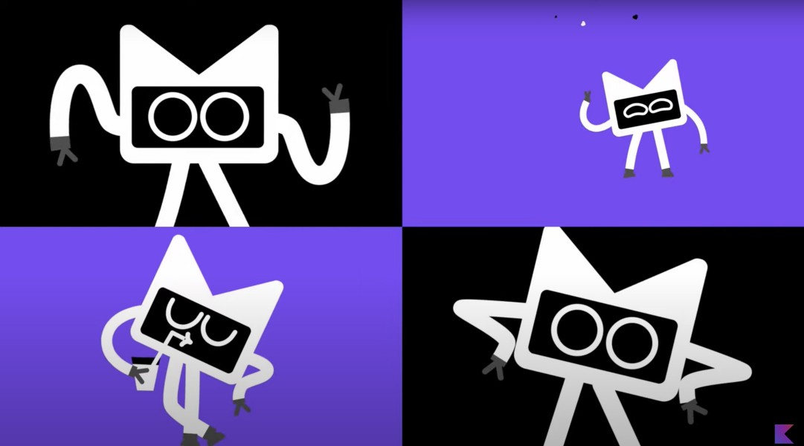

Kotlin VS Ruby
... и почему он нам не нужен
Обо мне
- Кодирую уже больше 30 лет
- Писал на калькуляторе, убийцу 1С, игрушку для Huawei, комплексную систему для РЖД, приложение для Госдумы, билетную систему для спорта и ещё много чего
- На платформах Desktop MsDos/Windows/Linux, Android, iOS, Qt, Flutter, Web
- На языках Basic, Pascal, Assembler, C/C++, C#, Java, Kotlin, JS/Typescript, Python, Ruby, Dart, Rust, Go и немного на Swift
И да, из всего этого мне нравится Kotlin
И да, из всего этого мне нравится Kotlin


Ещё немного фоток Котлина
Kotlin
Kotlin
Его придумали русские
А если конкретно, то Андрей Бреслав в 2011 году
Основные преимущества
- Гибкость и простота синтаксиса
- Поддержка всех современных модных фишек, таких как асинхронность, создание DSL, функциональщина, расширения, делегаты и много что ещё
- Строгая типизация и Null-безопасность
- Мультиплатформенность
А ещё у него есть вот такой масКот
Погнали сравнивать с Ruby!
Smart-cast
fun hello(obj: Any) {
if (obj !is UserInfo)
throw IllegalParameterException("Object must be UserInfo")
println("Hello ${obj.name}")
}
Асинхронность
Асинхронность в Kotlin основана на coroutines (сопрограмма)
Сопрограмма это функция с возможностью приостановки в определённых точках, сохранения контекста выполнения, и переключения на выполнение части другой корутины с последующим возвратом в место прерывания.